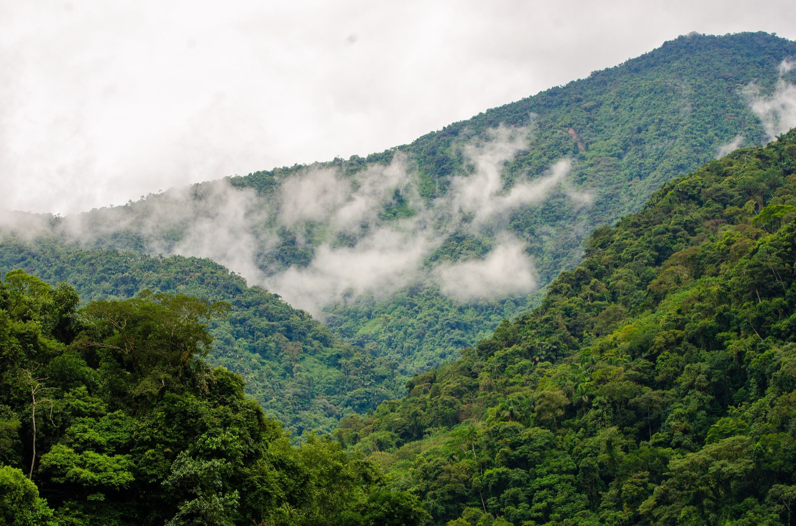
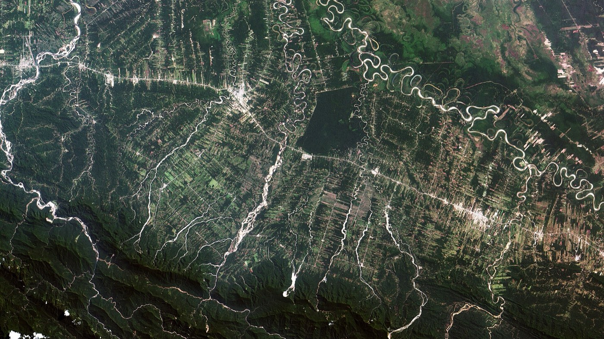
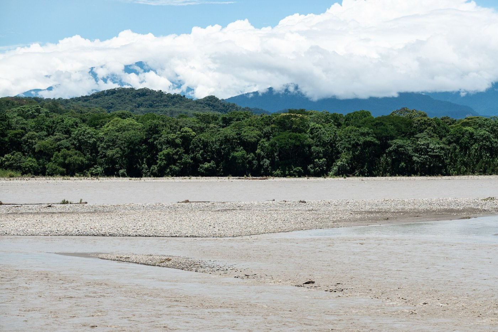

Paga con QR
Desde cualquier app de banco.
Pasaje seguro
Con código QR que no se copia.
Bus en vivo
Ubicación cada 5 a 10 segundos.
Sin señal, igual
Se sincroniza al volver la red.
Próximas salidas
Desde la parada de Ivirgarzama y de regreso, en tiempo real.
Tablero de salidas
--:--:--
| Interno | Ruta | Sale | Llega | Vehículo | Precio | Estado |
|---|---|---|---|---|---|---|
| 8 | Ivirgarzama a Cochabamba | 06:00 | 10:30 | Bus | Bs 35,00 | Programado |
| 24 | Ivirgarzama a Villa Tunari | 06:00 | 07:15 | Minibús | Bs 12,00 | Programado |
| 32 | Ivirgarzama a Puerto Villarroel | 06:00 | 06:40 | Minibús | Bs 6,00 | Programado |
| 38 | Ivirgarzama a Bulo Bulo | 06:00 | 07:00 | Minibús | Bs 10,00 | Programado |
| 25 | Villa Tunari a Ivirgarzama | 06:10 | 07:25 | Minibús | Bs 12,00 | Programado |
| 33 | Puerto Villarroel a Ivirgarzama | 06:15 | 06:55 | Minibús | Bs 6,00 | Programado |
| 26 | Ivirgarzama a Villa Tunari | 06:20 | 07:35 | Minibús | Bs 12,00 | Programado |
| 39 | Bulo Bulo a Ivirgarzama | 06:20 | 07:20 | Minibús | Bs 10,00 | Programado |

Nuestra casa es Ivirgarzama
En el corazón de la provincia Carrasco, entre ríos y selva. De nuestra parada salen las cuatro rutas del sindicato.
- Ivirgarzama, Cochabamba
- Resolución Suprema N° 204268
Mira dónde viene tu bus
Cada vehículo del sindicato aparece en el mapa mientras está en ruta.
Varios vehículos en ruta ahora
Abrir el mapa
Rutas populares
Todas salen de Ivirgarzama. Elige tu destino.
Viajar es fácil
En tres pasos, desde tu celular o en la parada.
- 1
Busca tu viaje
Origen, destino y hora, con los asientos libres.
- 2
Elige tu asiento
Ventana o pasillo, y pagas con QR o en efectivo.
- 3
Sigue tu bus
Con el código de tu pasaje, y compártelo con tu familia.
¿Tu pasaje es auténtico?
Escribe el código o escanea el QR con tu celular.